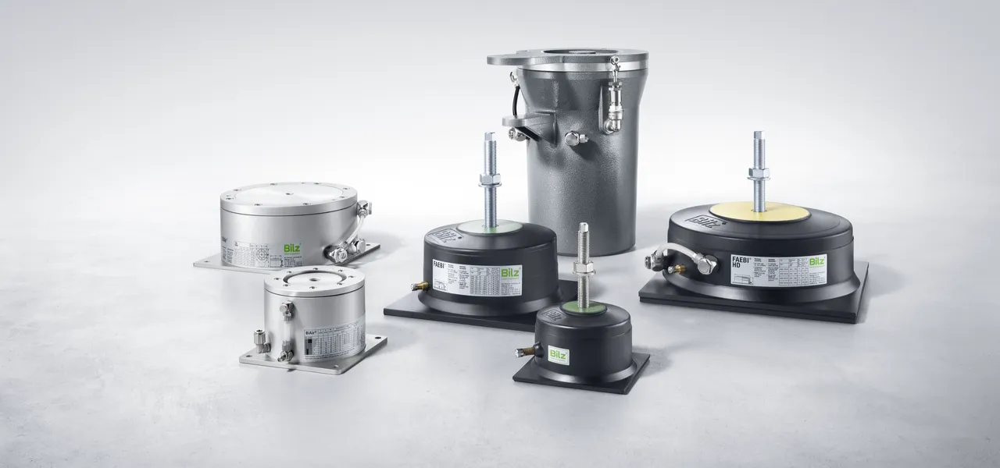
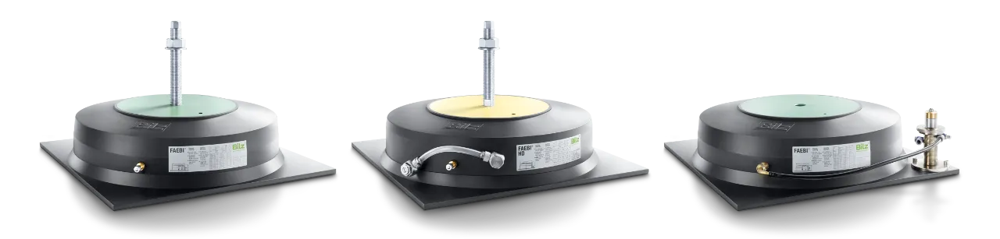
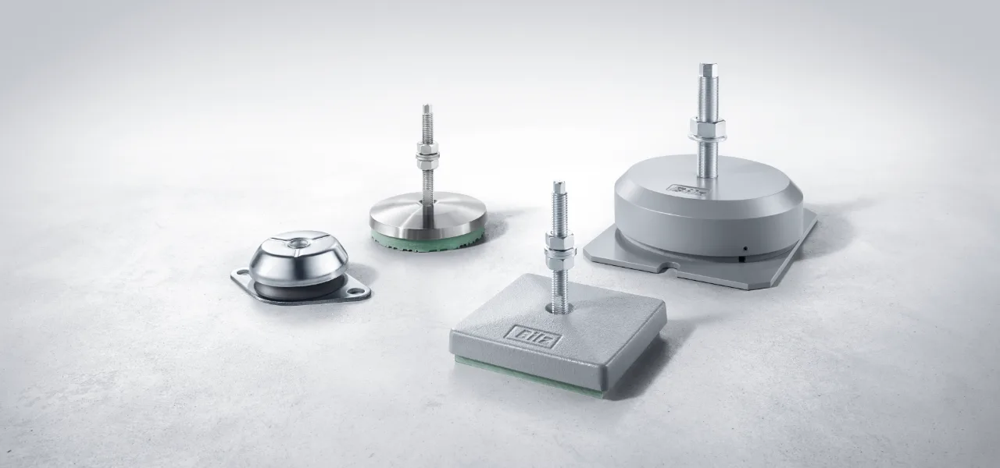
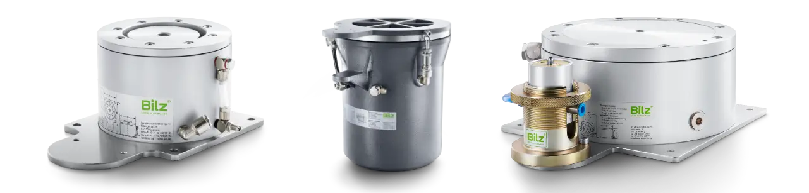
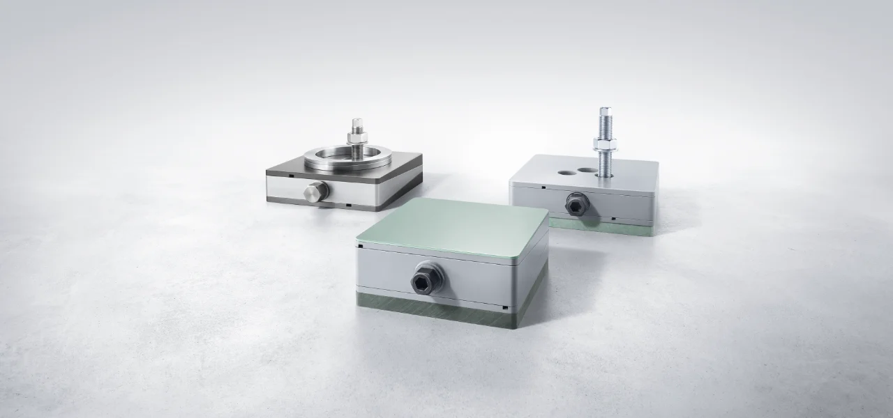
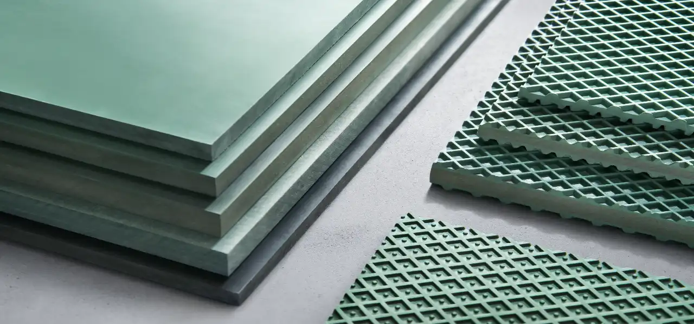
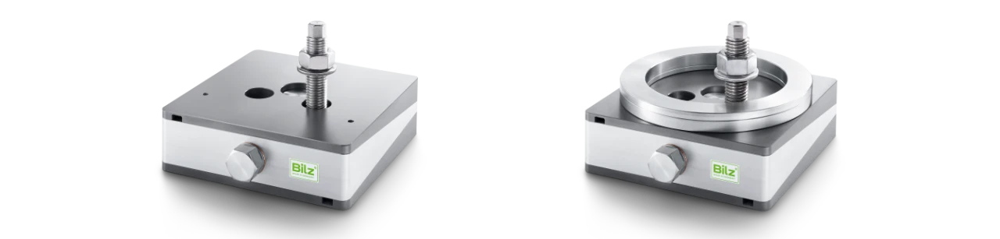
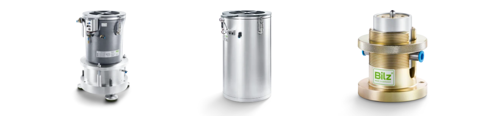

Wibroizolator ➔ Klucz do precyzji i jakości
Strona internetowa firmy EKKON oferuje szeroki wybór produktów do tłumienia drgań i hałasu, które znajdują zastosowanie w różnych dziedzinach przemysłowych oraz laboratoryjnych. Firma specjalizuje się w dostarczaniu wibroizolatorów, które pozwalają na skuteczną redukcję drgań przenoszonych z maszyn do otoczenia, jak również zmniejszają wpływ drgań z podłoża na urządzenia. Oferowane produkty obejmują wibroizolatory membranowe, pneumatyczne, elastomerowe, a także gumowo-metalowe, które są dostosowane do różnych potrzeb i wymagań technicznych.
Ponadto firma EKKON będąca przedstawicielem BILZ Vibration Technology A.G. proponuje stopy wibroizolacyjne do poziomowania maszyn, które zapewniają stabilność urządzeń, oraz miechy pneumatyczne które mają szerokie zastosowanie w izolacji wrażliwych przyrządów takich jak współrzędnościowe maszyny pomiarowe MITUTOYO, ZEISS, LK, COORD, TRIMEK, WENZEL. Wszystkie produkty charakteryzują się wysoką jakością wykonania i skutecznością w eliminowaniu niepożądanych wibracji, co jest kluczowe dla zapewnienia bezpieczeństwa i efektywności pracy w różnych środowiskach przemysłowych.
BILZ Vibration Technology A.G. ➔ Ekspert w dziedzinie wibroizolatorów
Firma BILZ Vibration Technology A.G. to specjalista w dziedzinie tłumienia drgań, oferujący szeroką gamę produktów, które pomagają zredukować negatywne skutki wibracji w różnych gałęziach przemysłu. Dzięki różnorodnym rozwiązaniom, możliwe jest spełnienie praktycznie wszystkich oczekiwań dotyczących tłumienia drgań i wibracji klientów z sektora przemysłowego, oferując produkty dostosowane do specyficznych potrzeb takich jak: prasy hydrauliczne i mimośrodowe, obrabiarki, czy czułe urządzenia pomiarowe.
Drgania, które powstają w wyniku pracy maszyn i urządzeń, mogą mieć poważny wpływ na komfort pracy, trwałość sprzętu oraz bezpieczeństwo w miejscu pracy. Właśnie w tym kontekście oferowane produkty odgrywają kluczową rolę, poprawiając zarówno efektywność pracy, jak i warunki pracy w wielu środowiskach przemysłowych.
Produkty z dziedziny wibroizolacji maszyn i urządzeń
Wibroizolatory pneumatyczne
W ofercie firmy BILZ Vibration Technology A.G. znajdują się różnorodne wibroizolatory pneumatyczne, które stanowią najbardziej efektywne rozwiązanie w zakresie tłumienia drgań. Są one wykorzystywane w szerokim zakresie automatyzacji produkcji, od przemysłu motoryzacyjnego, przez przemysł maszynowy, po systemy kontroli jakości, laboratoria i instytuty badawcze. Wibroizolatory pneumatyczne oferowane przez firmę BILZ Vibration Technology A.G. produkowane są z wysokiej jakości materiałów, które zapewniają długotrwałą trwałość oraz skuteczną ochronę przed drganiami.
Wibroizolatory elastomerowe
Jednym z podstawowych typów wibroizolatorów są wibroizolacyjne kliny ustawcze (tzw. niwelery). Składają się one z dwóch głównych elementów: korpusu wykonanego jako odlew żeliwny i elastomeru, co zapewnia doskonałą kombinację wytrzymałości mechanicznej oraz elastyczności przy jednoczesnym precyzyjnym wypoziomowaniu maszyny. Tego typu wibroizolatory stosowane są w miejscach, gdzie konieczne jest precyzyjne wypoziomowanie maszyny działającej pod dużym obciążeniem w połączeniu z dużymi siłami dynamicznymi. Przeznaczone są głównie do stosowania w przemyśle ciężkim, głównie w środowisku pras i obrabiarek do metalu.
Wibroizolatory pneumatyczne BiAir
Wibroizolatory pneumatyczne to bardzo efektywne rozwiązanie dedykowane do zastosowań, gdzie wymagana jest większa odporność na obciążenia mechaniczne. Produkty te są wykorzystywane w maszynach, które generują drgania o wysokiej intensywności, a jednocześnie wymagają zachowania bezobsługowego charakteru ich pracy. Wibroizolatory tego typu stosowane są jako systemy antywibracyjne do maszyn pomiarowych CMM renomowanych producentów, takich jak MITUTOYO, ZEISS, LK, COORD, TRIMEK, WENZEL.
Zalety: Wibroizolatory pneumatyczne wykorzystywane są w przypadkach, gdy elastomerowe rozwiązania mogą być niewystarczające, a wibroizolatory sprężynowe nie posiadają regulacji położenia i zachowania poziomu oraz wymagają okresowej wymiany. Wibroizolatory łączą elastyczność gumy z wytrzymałością metalu, tworząc idealne rozwiązanie dla urządzeń i maszyn pracujących w różnych środowiskach przemysłowych takich jak prasy mimośrodowe i hydrauliczne, maszyny pakujące, wykrawarki młoteczkowe, wibratory. Zapewniają one wyjątkową odporność na różne obciążenia mechaniczne i są w stanie wytrzymać długotrwałe użytkowanie, zapewniając bardzo duży stopień izolacji drgań niskoczęstotliwościowych.
Stopy poziomujące do maszyn i kliny ustawcze
Innym ważnym produktem, który znajduje się w ofercie firmy BILZ, są stopy poziomujące maszyn. Ich głównym zadaniem jest stabilizowanie urządzeń, gdzie niestabilne podłoże mogłoby wpływać na ich efektywność. Stopy poziomujące są niezbędne w przypadku precyzyjnych maszyn, takich jak maszyny pakujące, szlifierki czy obrabiarki CNC, które muszą działać w ściśle określonym położeniu. Dodatkową zaletą jest ochrona BHP oraz wydłużenie żywotności maszyn i narzędzi.
Maty i przekładki wibroizolacyjne
Maty izolacyjne służą do tłumienia drgań i zapewnienia stabilności maszyn. W ofercie dostępne są różne typy mat, takie jak:
- Typ B0: Maty o wysokiej nośności, stosowane w aplikacjach, gdzie drgania są duże, a obciążenie maszyn wymaga dużej stabilności.
- Typ B6: Charakteryzują się doskonałymi właściwościami tłumienia, co czyni je idealnymi do maszyn wymagających wysokiej precyzji.
- Typ B4: Maty łączące elastyczność z odpowiednią sztywnością, oferujące wszechstronność zastosowań.
- Typ B50: Maty przeznaczone do bardziej wymagających zastosowań, gdzie stabilność i odporność na drgania są kluczowe.
- Typ B5: Zapewniają skuteczne tłumienie w średnich zakresach obciążeń.
- Typ B32: Idealne do zastosowań wymagających bardzo precyzyjnego poziomowania i tłumienia.
- Typ B32 W i Typ B30W: Wersje mat z dodatkowymi właściwościami tłumienia, które są skuteczne w bardziej ekstremalnych warunkach.
- Typ B13W: Maty, które zapewniają bardzo wysoką wydajność tłumienia w trudnych warunkach, np. przy intensywnych drganiach.
Maty te są dostępne w różnych wariantach, co pozwala na ich zastosowanie w szerokim zakresie warunków pracy – od standardowych maszyn przemysłowych po precyzyjne urządzenia, gdzie tłumienie wibracji jest niezbędne dla zachowania jakości i precyzji produkcji. Dodatkowo, dostępne są płyty antypoślizgowe do mechanicznego poziomowania oraz zestawy płyt izolacyjnych do kompleksowej izolacji drgań.
Elementy poziomujące ➔ Stopy do maszyn
Elementy poziomujące to jeden z kluczowych produktów BILZ, umożliwiający precyzyjne ustawienie maszyn i urządzeń. Służą one do idealnego wypoziomowania maszyn w sposób, który zapewnia ich maksymalną stabilność i dokładność działania. W ofercie firmy znajdują się różne typy elementów, które różnią się nośnością, precyzją oraz metodą montażu.
- Typ BNSH/BNSHA: Są to elementy charakteryzujące się bardzo wysoką nośnością, umożliwiające precyzyjne ustawienie maszyn o dużych rozmiarach i wadze.
- Typ BNV/BNVS: Cechują się elastycznością w regulacji wysokości, co sprawia, że można je łatwo dostosować do różnych maszyn i urządzeń.
- Typ BNR/BNRS: Modele te oferują bardzo łatwą instalację oraz gwarantują wysoką dokładność poziomowania, co jest szczególnie ważne w przypadku skomplikowanych procesów produkcyjnych.
- Typ BNRV/BNRSV: Połączenie funkcji tłumienia drgań oraz precyzyjnego poziomowania w jednym rozwiązaniu.
- Typ BFE: Kompaktowe elementy poziomujące, które zapewniają bardzo dokładne ustawienie maszyn w ograniczonych przestrzeniach.
- Typ GMA: Nowoczesne rozwiązanie, które oferuje innowacyjne podejście do poziomowania, zwłaszcza w trudnych warunkach przemysłowych.
Elementy te mogą być stosowane w szerokim zakresie aplikacji – od urządzeń laboratoryjnych po duże maszyny przemysłowe, wymagające dokładnego ustawienia.
Kliny ustawcze wibroizolacyjne ➔ Niwelery
Kliny ustawcze są stosowane do stabilizacji maszyn oraz precyzyjnego poziomowania. Dzięki nim możliwe jest osiągnięcie wyjątkowej dokładności w ustawieniu urządzeń, co jest niezbędne w przypadku maszyn o wysokiej precyzji. Kliny te charakteryzują się nie tylko dokładnością, ale także dużą odpornością na obciążenia mechaniczne.
- Typ PK: Standardowy model, który zapewnia wysoką precyzję i łatwość montażu.
- Typ PKA: Wersja z dodatkowymi funkcjami, jak automatyczne poziomowanie, co ułatwia proces instalacji.
- Typ PKD: Kliny przeznaczone do aplikacji, gdzie dodatkowe właściwości tłumienia drgań są kluczowe.
- Typ PKAK: Połączenie funkcji klinów oraz elementów tłumiących, które pozwalają na jednoczesne ustawienie i izolację drgań.
- Typ PKDK: Bardzo precyzyjne kliny, stosowane w aplikacjach wymagających najwyższej dokładności.
- Typ PKA-AL, PKD-AL, PKAK-AL, PKDK-AL: Aluminiowe wersje, które są lżejsze i bardziej odporne na warunki atmosferyczne.
- Typ PKA-VA, PKD-VA, PKAK-VA, PKDK-VA: Wersje ze stali nierdzewnej, które zapewniają odporność na korozję i są dedykowane do bardziej wymagających warunków.
Te zaawansowane technologicznie rozwiązania są nieocenione w precyzyjnych aplikacjach, takich jak maszyny do obróbki, urządzenia pomiarowe, czy systemy wrażliwe na drgania. Wykorzystywane są głównie w przypadkach, gdy wymagana jest regulacja poziomu maszyn w płaszczyźnie poziomej, co jest istotne w procesach produkcyjnych, gdzie błędy w poziomowaniu mogą prowadzić do powstawania odchyleń w jakości produkcji.
Zaawansowane systemy wibroizolacji
EPPC™ (Electronic Pneumatic Position Control)
EPPC™ to elektroniczny system kontroli poziomu, który zapewnia optymalną izolację drgań dla maszyn o wysokiej precyzji, takich jak mikroskopy, maszyny pomiarowe oraz urządzenia testowe i produkcyjne. System EPPC™ może współpracować z trzema do sześciu grupami kontrolnymi membranowych sprężyn powietrznych BiAir®, co pozwala na kontrolę do sześciu stopni swobody. Bilz oferuje szeroką gamę różnych rozmiarów sprężyn powietrznych do projektowania systemu.
Kluczowe cechy EPPC™:
- Precyzyjna kontrola poziomu: Zapewnia utrzymanie poziomu roboczego maszyny, minimalizując wpływ drgań zewnętrznych.
- Szeroki zakres konfiguracji: Możliwość dostosowania liczby i rodzaju sprężyn powietrznych w zależności od specyficznych potrzeb aplikacji.
- Integracja z różnymi systemami: Łatwe połączenie z istniejącymi maszynami i urządzeniami pomiarowymi.
EPN ➔ Elektroniczny system poziomowania
EPN to elektroniczny system kontroli poziomu, przeznaczony do stosowania w dynamicznych i wrażliwych na drgania maszynach pomiarowych, a także w urządzeniach testowych i produkcyjnych. System wykorzystuje inteligentny algorytm sterowania oraz elektroniczne zawory, co pozwala na znaczne zmniejszenie odchyleń i czasów ustalania w porównaniu z mechanicznymi systemami kontroli poziomu.
Kluczowe cechy EPN:
- Zaawansowane sterowanie: Inteligentny algorytm zapewnia szybkie i precyzyjne dostosowanie poziomu maszyny.
- Łatwa integracja: Możliwość łatwego włączenia do istniejących systemów maszynowych.
- Minimalizacja drgań: Skuteczne tłumienie drgań, co przekłada się na zwiększoną dokładność pomiarów i jakości produkcji.
FAEBI® ➔ Wibroizolator pneumatyczny metalowo-gumowy
FAEBI® to seria gumowych sprężyn powietrznych zaprojektowanych do skutecznej izolacji drgań, wstrząsów i hałasu dla maszyn, urządzeń i agregatów. Dzięki możliwości regulacji ciśnienia powietrza, użytkownik może dostosować twardość zawieszenia do indywidualnych potrzeb aplikacji.
Kluczowe cechy FAEBI®:
- Regulacja twardości: Dostosowanie ciśnienia powietrza pozwala na precyzyjne ustawienie charakterystyki tłumienia.
- Wbudowane tłumienie: Zintegrowane elementy tłumiące eliminują potrzebę stosowania osobnych amortyzatorów.
- Izolacja hałasu: Skutecznie zapobiegają przenoszeniu hałasu strukturalnego na otoczenie.
FAEBI® w wersji HD: Wersja HD (Heavy Duty) gumowych sprężyn powietrznych FAEBI® została zaprojektowana z myślą o aplikacjach wymagających wyższych obciążeń. Oferują one dodatkowe funkcje, takie jak regulacja stopnia tłumienia, co pozwala na lepsze dopasowanie do specyficznych potrzeb aplikacji.
Kluczowe cechy FAEBI®-HD:
- Wysoka nośność: Przeznaczone do pracy w aplikacjach o dużych obciążeniach.
- Regulacja tłumienia: Możliwość dostosowania stopnia tłumienia do indywidualnych potrzeb.
- Odporność na zużycie: Wykonane z materiałów odpornych na zużycie, co zapewnia długotrwałą niezawodność.

Wibroizolatory membranowe BiAir®
BiAir to zaawansowane membranowe elementy powietrzne opracowane przez firmę Bilz AG, mające na celu skuteczną izolację drgań w różnych aplikacjach przemysłowych i laboratoryjnych. Charakteryzują się one niską częstotliwością naturalną oraz precyzyjnie regulowanym poziomem tłumienia, co zapewnia efektywną ochronę przed drganiami i hałasem.
Wibroizolatory BiAir® składają się z korpusu wykonanego z odlewu aluminium, w którym znajduje się przestrzeń powietrzna otoczona cienkościenną, elastyczną i odporną na ciśnienie membraną. Tłok opiera się na tej membranie i jest dociskany przez objętość powietrza, co pozwala na skuteczne tłumienie drgań. Wewnątrz sprężyny powietrznej znajdują się dwie komory powietrzne połączone przewodem powietrznym (komora obciążenia i komora tłumienia). Za pomocą regulowanego zaworu dławika można zewnętrznie ustawić przepływ powietrza, co pozwala na precyzyjne dostosowanie poziomu tłumienia, osiągając efektywność do 15%. Dodatkowe zawory bezpieczeństwa chronią membranę przed uszkodzeniem spowodowanym nadmiernym ciśnieniem.
Kluczowe cechy elementów BiAir®:
- Niska częstotliwość naturalna: Elementy BiAir® oferują naturalne częstotliwości w zakresie od 1,2 Hz do 2,5 Hz, w zależności od modelu, co pozwala na skuteczną izolację nawet przy niskich częstotliwościach drgań.
- Regulacja tłumienia: Dzięki precyzyjnie regulowanemu poziomowi tłumienia, możliwe jest dostosowanie charakterystyki tłumienia do indywidualnych potrzeb aplikacji, co zapewnia optymalną ochronę przed drganiami.
- Odporność i bezobsługowość: Elementy wykonane są z materiałów odpornych na zużycie, co gwarantuje długotrwałą niezawodność i minimalne wymagania konserwacyjne.
- Izolacja hałasu: BiAir® skutecznie zapobiegają transmisji hałasu strukturalnego, co jest istotne w środowiskach wymagających wysokiej precyzji i ciszy.
Zastosowania elementów BiAir®: Elementy BiAir® znajdują szerokie zastosowanie w izolacji drgań maszyn pomiarowych, urządzeń testowych, systemów optycznych i elektronicznych, a także w stołach laboratoryjnych. Ich zdolność do tłumienia drgań i utrzymywania stabilnego poziomu sprawia, że są idealne w aplikacjach wymagających wysokiej precyzji i niezawodności.
Przykładowe serie elementów BiAir®:
- Zakres obciążeń do 20.000 kg na sztukę (!) do zastosowań pod fundamentami dużych współrzędnościowych maszyn pomiarowych.
- BiAir®-ED-AL: Membranowy element powietrzny wykonany z anodowanego aluminium, przeznaczony do aplikacji o wysokich wymaganiach materiałowych.
- BiAir®-ED-HE-MAX: Element o bardzo niskiej częstotliwości naturalnej (1,2 Hz), wykonany z odlewanego aluminium, idealny do zastosowań wymagających maksymalnej izolacji drgań.
- BiAir®-ED-HE: Element o niskiej częstotliwości naturalnej (1,7 Hz), wykonany z odlewanego aluminium, oferujący efektywną izolację drgań w różnych aplikacjach.
Integracja z systemami kontrolnymi: Elementy BiAir® mogą być zintegrowane z różnymi systemami kontrolnymi, takimi jak elektroniczne systemy kontroli poziomu (np. EPPC™ i EPN), co pozwala na automatyczne dostosowanie poziomu i tłumienia w odpowiedzi na zmiany obciążenia. Takie połączenie zapewnia optymalną wydajność i precyzję w izolacji drgań.
Zalety produktów BiAir:
- Wysoka precyzja: Zapewnienie stabilnej powierzchni roboczej dla dokładnych pomiarów i eksperymentów (współrzędnościowe maszyny pomiarowe CMM).
- Skuteczna izolacja drgań: Ochrona przed zakłóceniami zewnętrznymi dzięki zaawansowanym systemom tłumienia (współrzędnościowe maszyny pomiarowe CMM).
- Elastyczność i dostosowanie: Możliwość konfiguracji produktów zgodnie z indywidualnymi wymaganiami aplikacji (współrzędnościowe maszyny pomiarowe CMM).
- Łatwość integracji: Proste włączenie do istniejących systemów laboratoryjnych lub produkcyjnych (współrzędnościowe maszyny pomiarowe CMM).
- Niezależność od obciążenia: Częstotliwość naturalna nie zmienia się wraz ze zmianami obciążenia, co zapewnia stabilność tłumienia.
- Niskie koszty utrzymania: Dzięki bezkontaktowej konstrukcji i zastosowaniu materiałów odpornych na zużycie, wibroizolatory wymagają minimalnej konserwacji.
- Łatwa regulacja tłumienia: Możliwość zewnętrznej regulacji poziomu tłumienia pozwala na optymalne dostosowanie do konkretnych warunków pracy.
- Brak przenoszenia hałasu strukturalnego: Izolatory skutecznie eliminują przekazywanie hałasu strukturalnego, co jest istotne w środowiskach wymagających wysokiej precyzji.
Produkty serii BiAir stanowią kompleksowe rozwiązania dla aplikacji wymagających precyzyjnej kontroli drgań i stabilności, przyczyniając się do poprawy jakości i dokładności procesów laboratoryjnych oraz przemysłowych.
Zastosowania wibroizolatorów
Wibroizolatory BiAir® znajdują zastosowanie w wielu dziedzinach, takich jak:
- Laboratoria: Izolacja wrażliwych urządzeń pomiarowych, takich jak maszyny pomiarowe współrzędnościowe, zapewniając stabilne warunki pracy.
- Przemysł: Ochrona maszyn i urządzeń przed drganiami, co zwiększa ich trwałość i precyzję działania.
- Aplikacje specjalistyczne: Izolacja urządzeń audio-wideo, sprzętu medycznego czy precyzyjnych instrumentów naukowych.
Dzięki zaawansowanej technologii i elastyczności w dostosowaniu parametrów, wibroizolatory BiAir® firmy BILZ stanowią skuteczne rozwiązanie w eliminacji drgań i zapewnieniu stabilności pracy w różnych środowiskach, w szczególności jako system antywibracyjny do maszyn MITUTOYO, ZEISS, LK, COORD, TRIMEK, WENZEL.
ИЗМЕРИТЕЛЬНЫЕ МАШИНЫ – Антивибрационная система для измерительной машины
Измерительные машины CMM, требующие особенно стабильных условий работы и очень высокой точности измерений, часто нуждаются в использовании активных систем подавления вибраций. Ведущие производители, такие как Mitutoyo, Zeiss, Wenzel, Trimek, LK Metrology, Hexagon, Keyence и другие, предъявляют к этим машинам высокие требования. Причина заключается в том, что традиционные виброизоляторами из резины или пружин не удовлетворяют ожиданиям по подавлению вибраций. В решении этой проблемы помогает антивибрационная система, основанная на пневматике. Эти системы используют пневматические подушки, мехи и демпферы, действующие как активные элементы, выполняющие роль виброизоляторов.
Измерительные машины таких компаний, как Mitutoyo, Zeiss, Hexagon и Trimek, имеют очень высокие требования к условиям их работы. Они являются неотъемлемой частью производственных процессов, находя применение в таких областях, как контроль качества, техническое обслуживание или исследовательские лаборатории. В нашем портфолио есть многочисленные реализации систем уменьшения вибраций для измерительных машин компаний Mitutoyo и Zeiss.
ПРОМЫШЛЕННЫЕ ВИБРОИЗОЛЯТОРЫ – Резиновые виброизоляторы и антивибрационные подушки
В промышленности методы подавления вибраций, такие как пружинные виброизоляторы, амортизаторы или пневматические демпферы, эффективно ограничивают передачу вибраций на оборудование и конструкции. Резиновые виброизоляторы, пружинные виброизоляторы и вибропоглощающие матки — это простое и эффективное решение в промышленности и лабораториях. Хотя антивибрационные матки проще, они также эффективно гасят вибрации, исходящие от динамичных производственных машин, таких как пресс-подборщики, упаковочные машины, вырубные прессы Amada, лазерные станки Trumpf и гидравлические прессы. Когда пружинные виброизоляторы оказываются недостаточными, использование более сложных решений, таких как пневматические подушки или мехи, может быть полезным.
ЛАБОРАТОРНАЯ ТЕХНИКА – Антивибрационные столы и лабораторные виброизоляторы
В лабораторной технике, используемой в таких областях, как физика твердого тела, молекулярная биология, интерферометрия, электронные и оптические микроскопы Zeiss, а также прецизионные весы, применяются лабораторные столы, оснащенные активными системами подавления вибраций. В этих случаях демпферы вибраций основываются на пневматических системах, и типичным примером является антивибрационный лабораторный стол, оснащенный антивибрационными подушками. Столешницы, оснащенные резиновыми виброизоляторами, демпферами, амортизаторами, подушками или пневматическими подушками, также находят применение в таких ситуациях.
Лабораторная техника является неотъемлемой частью отделов контроля качества на производственных предприятиях. В большинстве случаев в этой области вибропоглощающие матки, включая резиновые, не дают желаемого результата.
КРЕПЛЕНИЕ МАШИН – Виброизолирующие регулировочные клинья для машин
В обработке металлов, пластмасс, древесины и производстве упаковки часто возникает потребность в точном закреплении и выравнивании машины или станка, а также в использовании системы подавления вибраций. В таких случаях применяются регулировочные клинья фирмы BILZ или машинные опоры с виброизоляционными матками, которые гасят вибрации. Типичный продукт — это антивибрационные опоры с регулировкой рабочей высоты, используемые как виброизолирующие регулировочные клинья.
В эту группу продуктов также входят клинья для установки и выравнивания машин, выполняющие двойную функцию: как элементы выравнивания, так и подавления вибраций и колебаний. Это обеспечивает защиту машины и конструкции производственного помещения от повреждений. Дополнительные продукты, такие как виброизоляционные матки или пружинные виброизоляторы, способствуют увеличению срока службы машин и инструментов. Опоры с антивибрационными матками повышают точность обработки и срок службы машин и инструментов. Виброизолирующие нивелеры, также известные как регулировочные клинья или машиностроительные клинья, используются для выравнивания машин.
АНТИВИБРАЦИОННЫЕ МАТЫ – Поглотители вибраций и антивибрационные прокладки
Антивибрационные матки, используемые в качестве прокладок, представляют собой простое, но эффективное решение для подавления вибраций, передаваемых на основание или производственную машину. Вибропоглощающие матки компании BILZ, изготовленные из высокопрочных композитных материалов на основе эластомеров, предлагают широкий ассортимент продукции, которую можно использовать в различных производственных условиях, учитывая стойкость к механическим нагрузкам и химическим воздействиям. Матки BILZ также используются как антивибрационные прокладки в стальных конструкциях, имеют долгий срок службы и предназначены для работы в особо сложных условиях.
ТЕСТОВЫЕ СТАНДЫ – Резиновые виброизоляторы для подавления вибраций
Конструкции тестовых стендов требуют применения соответствующих виброизоляционных систем для предотвращения передачи вибраций и колебаний на основание. Системы подавления вибраций используют такие конструктивные элементы, как резиновые виброизоляторы, мехи, пружинные виброизоляторы, пневматические подушки и демпферы. Хотя пружинные виброизоляторы могут быть альтернативой пневматическим подушкам и мехам, они уступают им по эффективности подавления вибраций и простоте обслуживания. Пневматические демпферы предлагают дополнительную возможность регулировки и полного контроля за антивибрационной системой.